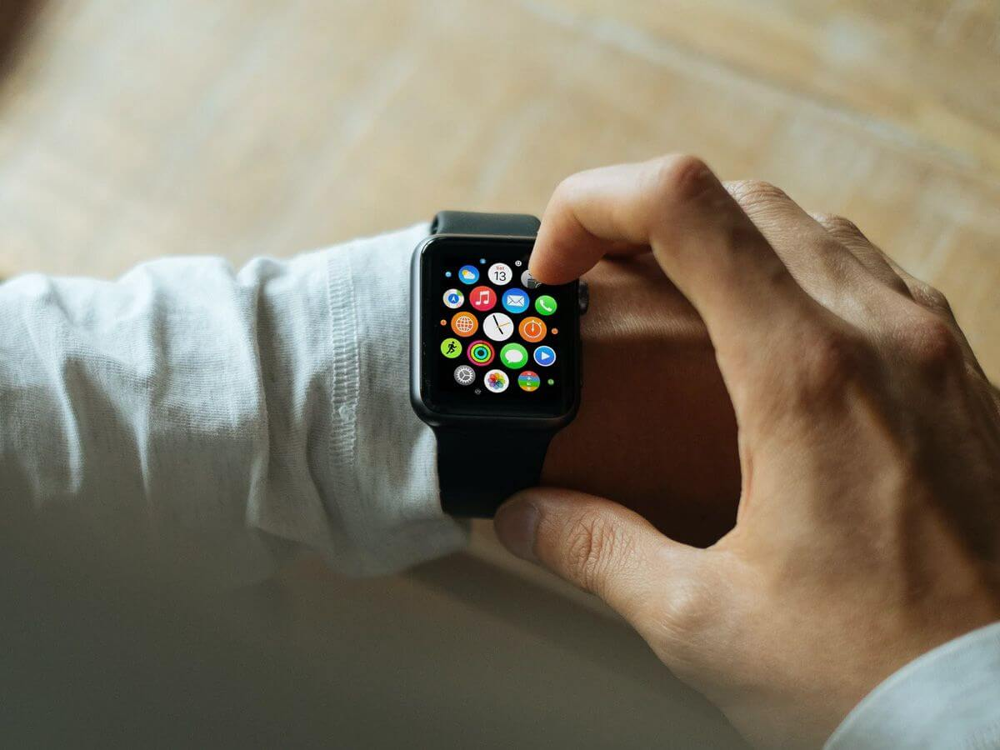

Imagen tomada de Bluumi
Ya entendimos que el Internet de las cosas ayuda a intercambiar datos entre dispositivos y conecta el mundo real con el internet. Pero ¿Qué tan importante es hoy en día? ¿Qué aplicaciones hay en la cotidianidad?
En español "usables" son todos esos accesorios conectados al internet, como los son los relojes inteligentes, gafas, gps, entre otros.
Imagen tomada de Bluumi
Son diferentes electrodomésticos que optimizan sus funciones. Por ejemplo, aires acondicionados que regulan la temperatura o se encienden automáticamente, neveras que identifican si hay algún producto que falta y pide domicilios, alarmas que proveen información del clima, etc.
Imagen tomada de Polizaplus
Son aquellas casas que tienen los suficientes equipos conectados al internet y a sensores que se regulan a sí mismos, ahorrando el consumo de energía, identificando los momentos en los que deben de hacer ciertas funciones, y que además se controlan remotamente por el usuario. También hay dispositivos concentrados en la seguridad del hogar, como alarmas de incendios o de robos.
Imagen tomada de CITYMAX LUXURY
Estos por medio de sensores, GPS, y datos del tráfico de la ciudad permiten que los carros tengan el suficiente conocimiento de la calle en la que están para que se manejen solos.
Imagen tomada de EL MOTOR
Se hace un monitoreo del tráfico, la gestión de suministros y ambientales. Para que así, tanto el gobierno como los ciudadanos, reconozcan las condiciones de las vías, la contaminación del aire, el uso de agua, gas y electricidad; entre otros.
Imagen tomada de HackerCar